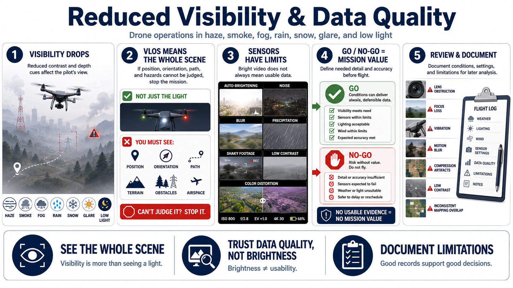

Visibility and Image Quality
Connecting to LMS... Progress: in progress

Narration
Haze, smoke, fog, rain, snow, low cloud, glare, and low light reduce visual contrast and depth cues. They can affect the operator's view of the aircraft, surrounding airspace, terrain, and obstacles even when the camera feed appears bright.
Visual-line-of-sight requirements and operational awareness apply to the whole scene, not only an aircraft light. If the pilot cannot reliably judge position, orientation, flight path, or hazards, the mission should not continue.
Sensors have limits. Automatic exposure may brighten a scene while increasing noise or blur. Precipitation and wind can destabilize footage. Haze and smoke can remove fine detail or change apparent color and distance.
Data quality should be part of go or no-go criteria. Define the detail and accuracy needed before flight. If conditions cannot produce evidence suitable for the decision, taking the flight adds risk without mission value.
A visible aircraft light does not prove that the surrounding route is visible. The operator must still recognize attitude, trajectory, terrain, obstacles, and nearby airspace well enough for controlled flight.
Review a sample when safe and watch for lens obstruction, focus loss, vibration, motion blur, compression, low contrast, or inconsistent mapping overlap. Avoid interpreting detail that the sensor did not capture reliably.
Document visibility, weather, lighting, wind, sensor settings, and limitations for later analysis. A report should explain whether poor conditions could hide features or create apparent changes.